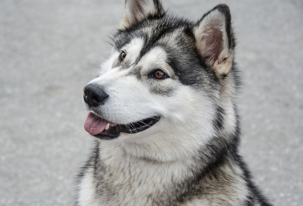
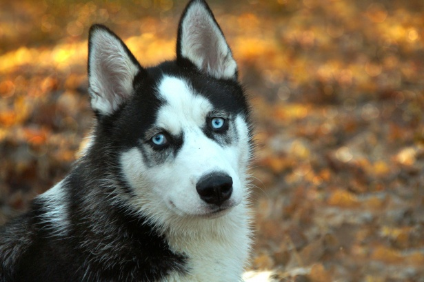
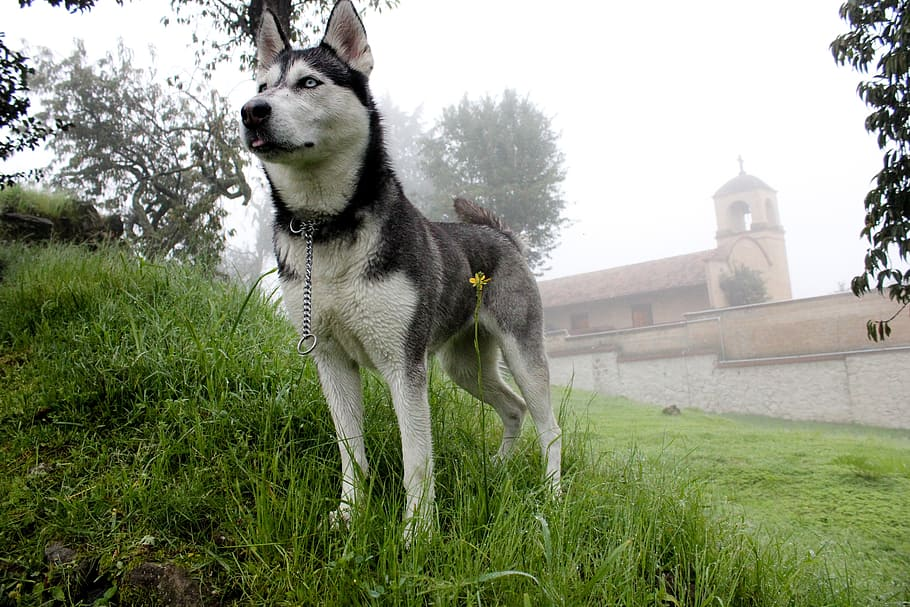

Alaskan malamutes are one of the oldest breed of sled dog, native to Alaska’s Arctic. These dogs have a thick coat to protect against the brutally frigid temperatures found
along the Iditarod course, and they possess the kind of unending endurance needed to stay in it for the long haul.
Malamutes are built to carry heavy loads over long distances, but aren’t really built for speed. Most Iditarod mushers do not use purebred malamutes in the race,
though some die-hard enthusiasts have entered malamute teams knowing that faster teams will likely pass them on the trail.
One 2014 musher’s goal was to capture the “Red Lantern,” the prize for the last dog sled team to cross the finish line.
Siberian Husky

Like their malamute cousins, the friendly and strong Siberian huskies love to exercise, making them natural born runners. They’re the traditional Iditarod dogs,
and some mushers still choose to run these exuberant canines in the race.
They’re strongly pack-oriented, which makes them great team players – after all, no one dog is the star of the Iditarod. Each sled places pairs of dogs in different but
equally important positions – starting with lead dogs, which follow musher’s directions, and ending with “wheel dogs,” which help pull and steer the sled.
But again, Siberian huskies don’t possess the kind of race-winning speed found in some of their canine relatives.
Alaskan Husky

These dogs are the ultimate racing machines, the modern Iditarod dog of choice. They’re bred specifically for all the qualities sought in a top canine athlete.
A team of researchers studied the genetic lineage of these popular racers and found their ancestry combines qualities of strength, speed, agility and endurance.
Alaskan huskies are descended from breeds including Alaskan malamutes, Siberian huskies, German shorthaired pointers, Salukis and Anatolian shepherds. Some Alaskan husky racers are
even bred with wolves. As such, the Alaskan huskies are not recognized by the American Kennel Club as a distinctive breed – but they are largely preferred by
Iditarod mushers as the dog
most likely to get them across the finish line first.
Alaskan Klee Kai
Although the Alaskan klee kai shares the same striking features as the large sled dogs on this list,
it generally weighs no more than 20 pounds. In fact, the name “klee kai” comes from the term meaning “little dog” in the Inuit language.
The klee kai was not bred for work but instead for companionship. To develop the breed, Siberian huskies were crossed with similar dogs of smaller stature,
including the American Eskimo dog and Schipperke. Though the Alaskan klee kai lacks the size and intense work drive of its husky ancestors,
these little pups still have plenty of energy.
These dogs tend to be loving, playful, and intelligent but wary of strangers. This makes them loyal family members and wonderful watchdogs.
However, they do need ample training and socialization to make sure their protectiveness doesn't become problematic.

 Although the Alaskan klee kai shares the same striking features as the large sled dogs on this list,
it generally weighs no more than 20 pounds. In fact, the name “klee kai” comes from the term meaning “little dog” in the Inuit language.
The klee kai was not bred for work but instead for companionship. To develop the breed, Siberian huskies were crossed with similar dogs of smaller stature,
including the American Eskimo dog and Schipperke. Though the Alaskan klee kai lacks the size and intense work drive of its husky ancestors,
these little pups still have plenty of energy.
These dogs tend to be loving, playful, and intelligent but wary of strangers. This makes them loyal family members and wonderful watchdogs.
However, they do need ample training and socialization to make sure their protectiveness doesn't become problematic.
Although the Alaskan klee kai shares the same striking features as the large sled dogs on this list,
it generally weighs no more than 20 pounds. In fact, the name “klee kai” comes from the term meaning “little dog” in the Inuit language.
The klee kai was not bred for work but instead for companionship. To develop the breed, Siberian huskies were crossed with similar dogs of smaller stature,
including the American Eskimo dog and Schipperke. Though the Alaskan klee kai lacks the size and intense work drive of its husky ancestors,
these little pups still have plenty of energy.
These dogs tend to be loving, playful, and intelligent but wary of strangers. This makes them loyal family members and wonderful watchdogs.
However, they do need ample training and socialization to make sure their protectiveness doesn't become problematic.